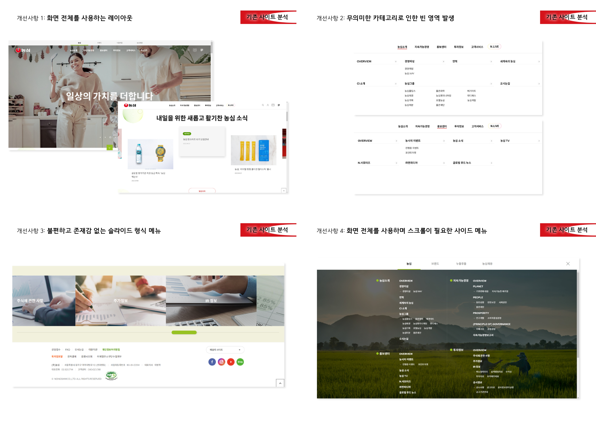
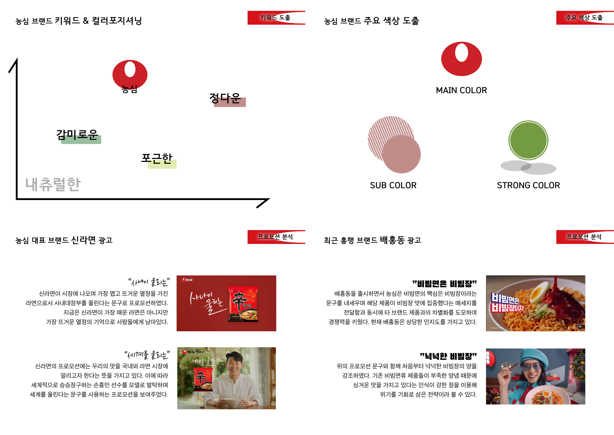
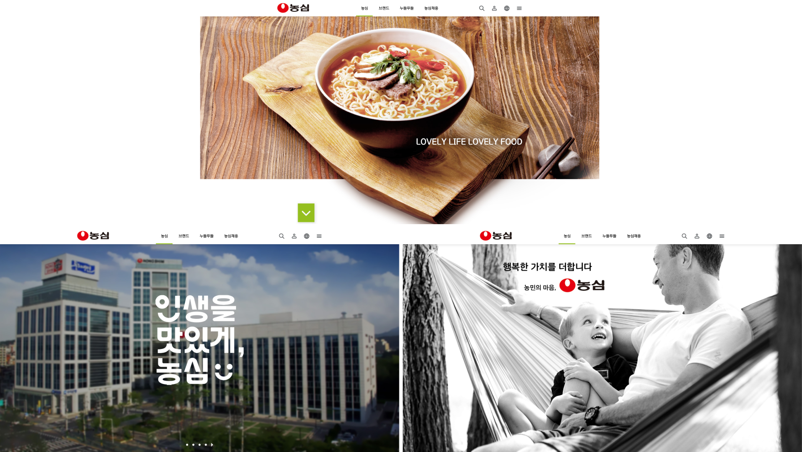
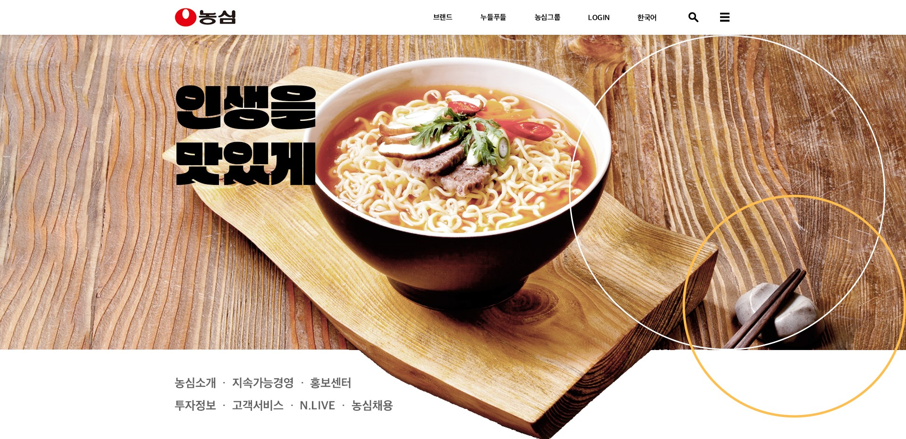
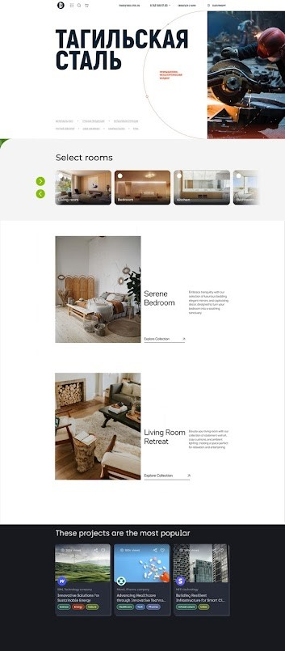
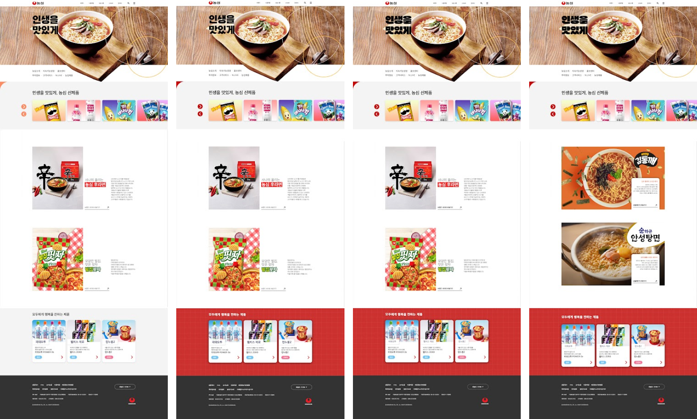
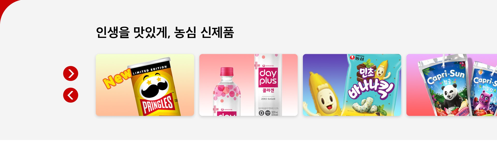
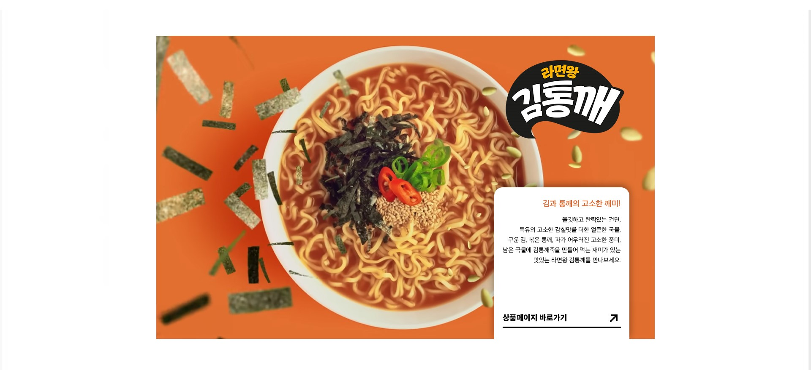
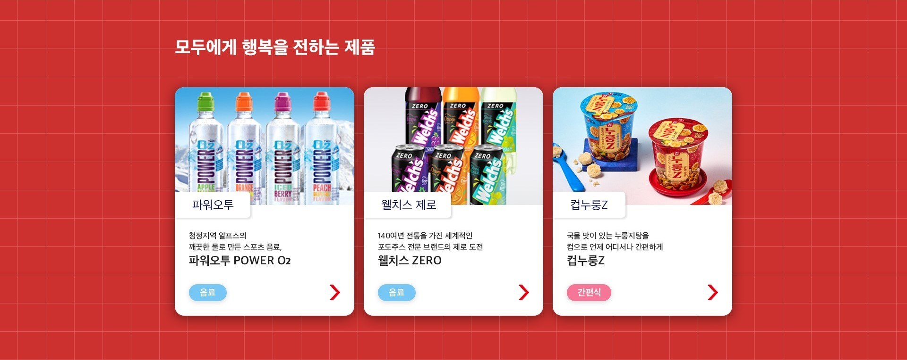

농심 메인페이지 리디자인
#DESIGN
개요
기존 농심 홈페이지는 큰 카테고리부터 별도 사이트로 분할되어 있어 메인 페이지의 분량에 비해 실질적으로 사용자를 머무르게 할 콘텐츠가 부족한 상황이다. 찾아보고 싶은 사람만 볼 콘텐츠는 메인 페이지에서 제외하고 많은 사람들이 원하는 콘텐츠를 우선적으로 배치할 필요가 있었고, 메인 페이지 내의 콘텐츠 우선순위를 재정의하고 흩어진 콘텐츠가 모이는 역할을 하도록 리디자인하였다. 또 사용자가 더 오래 머무르게 하고, 구매까지 이어질 수 있도록 리디자인하는 것을 목표로 하였다.
작업과정 01.
브랜드 분석
A. 기존 사이트 분석
B. 브랜드 및 프로모션 분석
작업과정 02.
메인 배너
A. 시안 3종
B. 최종
작업과정 03.
레이아웃
A. 레퍼런스 수집
B. 메인페이지 작업
1~4차 작업물.
2차 피드백: 사용 이미지 퀄리티 개선 > 광고 영상 캡처하여 사용 / 포토샵 보정
메인 배너
기존에 농심이 가지고 있는 포근함과 유니크함을 살릴 수 있도록 하는 것에 초점을 맞췄다.
농심의 대표 제품이라 할 수 있는 신라면 이미지를 입체적으로 활용하고, 캐치프라이즈는 개성 강한 글꼴을 사용하여 부각하였다.
또 기존의 내비게이션 내용 중 브랜드 및 회사 자체에 관련된 내용은
일반 유저의 탐색을 방해하지 않되 찾고 싶은 사람은 쉽게 찾을 수 있도록
단순화된 카테고리로 다시 묶어 배너 아래 빈 공간으로 옮겼다.
흥미 유도 콘텐츠 섹션
뉴스에서 볼 법한 회사 홍보 콘텐츠 대신 일반적인 대중에게 더 익숙할 농심의 제품들을 슬라이드로 볼 수 있게 꾸몄다. 단순 나열이 아닌 버튼식 슬라이드를 활용함으로서 사용자가 한 번 더 관심을 갖게 하고 직접 탐색하는 경험을 줄 수 있도록 했다.
농심의 대표 혹은 신제품을 화면 전체에서 보여주어 시선을 사로잡을 수 있는 컴포넌트를 고안하였다. 해당 컴포넌트에 신제품을 넣고 2개에서 3개까지 메인 페이지에 배치하여 더 친근하게 뉴스 역할을 대신하게 할 수 있다.
푸터 바로 위에 추천 제품을 배치할 수 있는 새로운 컴포넌트를 고안하였다. 푸터에 도달하기 직전까지 모든 콘텐츠를 지나쳐온 사용자에게 강렬한 배경색으로 눈길을 사로잡아 다시 한 번 제품 추천을 시도할 수 있다.